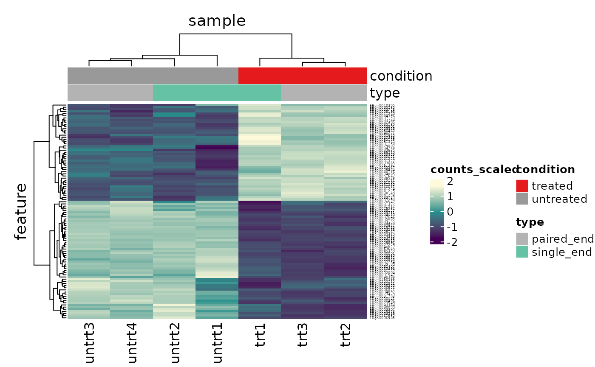

Suggested answers to the workshop questions are below. You might have some different code e.g. to customise the volcano plot as you like. Feel free to comment on any of these solutions in the workshop website as described here.
# load libraries library(airway) # tidyverse core packages library(tibble) library(dplyr) library(tidyr) library(readr) library(stringr) library(purrr) library(ggplot2) # tidyverse-friendly packages library(plotly) library(ggrepel) library(tidyHeatmap) library(tidybulk)
Part 1 Bulk RNA-seq Core
Airway dataset
What fraction of variance is explained by PC3?
counts_tt %>% scale_abundance() %>% reduce_dimensions(method="PCA", .dims=3)
## Warning in eval(dots[[i]][[action]], env, env): tidybulk says: highly abundant
## transcripts were not identified (i.e. identify_abundant()) or filtered (i.e.,
## keep_abundant), therefore this operation will be performed on unfiltered
## data. In rare occasions this could be wanted. In standard whole-transcriptome
## workflows is generally unwanted.
## Warning in eval(dots[[i]][[action]], env, env): tidybulk says: highly abundant
## transcripts were not identified (i.e. identify_abundant()) or filtered (i.e.,
## keep_abundant), therefore this operation will be performed on unfiltered
## data. In rare occasions this could be wanted. In standard whole-transcriptome
## workflows is generally unwanted.## Getting the 500 most variable genes## Fraction of variance explained by the selected principal components## # A tibble: 3 x 2
## `Fraction of variance` PC
## <dbl> <int>
## 1 0.314 1
## 2 0.300 2
## 3 0.177 3## tidybulk says: to access the raw results do `attr(..., "internals")$PCA`## # A tibble: 512,816 x 18
## feature sample counts SampleName cell dex albut Run avgLength Experiment
## <fct> <chr> <int> <fct> <fct> <fct> <fct> <fct> <int> <fct>
## 1 ENSG00… SRR10… 679 GSM1275862 N613… untrt untrt SRR1… 126 SRX384345
## 2 ENSG00… SRR10… 0 GSM1275862 N613… untrt untrt SRR1… 126 SRX384345
## 3 ENSG00… SRR10… 467 GSM1275862 N613… untrt untrt SRR1… 126 SRX384345
## 4 ENSG00… SRR10… 260 GSM1275862 N613… untrt untrt SRR1… 126 SRX384345
## 5 ENSG00… SRR10… 60 GSM1275862 N613… untrt untrt SRR1… 126 SRX384345
## 6 ENSG00… SRR10… 0 GSM1275862 N613… untrt untrt SRR1… 126 SRX384345
## 7 ENSG00… SRR10… 3251 GSM1275862 N613… untrt untrt SRR1… 126 SRX384345
## 8 ENSG00… SRR10… 1433 GSM1275862 N613… untrt untrt SRR1… 126 SRX384345
## 9 ENSG00… SRR10… 519 GSM1275862 N613… untrt untrt SRR1… 126 SRX384345
## 10 ENSG00… SRR10… 394 GSM1275862 N613… untrt untrt SRR1… 126 SRX384345
## # … with 512,806 more rows, and 8 more variables: Sample <fct>,
## # BioSample <fct>, TMM <dbl>, multiplier <dbl>, counts_scaled <dbl>,
## # PC1 <dbl>, PC2 <dbl>, PC3 <dbl>How many differentially expressed transcripts are there for FDR < 0.05 if we did not include cell line in the formula?
counts_tt %>% keep_abundant(factor_of_interest=dex) %>% test_differential_abundance( .formula = ~ 0 + dex, .contrasts = c("dextrt - dexuntrt"), omit_contrast_in_colnames = TRUE ) %>% filter(FDR < 0.05) %>% summarise(num_de = n_distinct(feature))
## tidybulk says: All methods use raw counts,
## irrespective of if scale_abundance or adjust_abundance have been calculated,
## therefore it is essential to add covariates such as batch effects (if applicable) in the formula.## tidybulk says: The design column names are "dextrt, dexuntrt"## tidybulk says: to access the raw results (fitted GLM) do `attr(..., "internals")$edgeR`## # A tibble: 1 x 1
## num_de
## <int>
## 1 1952Pasilla dataset
# load data data("pasilla", package = "rpharma2020tidytranscriptomics") # create tidybulk tibble counts_tt <- pasilla %>% tidybulk() %>% mutate(symbol = AnnotationDbi::mapIds(org.Dm.eg.db::org.Dm.eg.db, keys=as.character(feature), keytype = "FLYBASE", column="SYMBOL", multiVals = "first"))
## ## 'select()' returned 1:1 mapping between keys and columns# filter counts counts_filtered <- counts_tt %>% keep_abundant(factor_of_interest = condition) # scale counts counts_scaled <- counts_filtered %>% scale_abundance()
What is the Fraction of Variance for PC1?
counts_scal_PCA <- counts_scaled %>% reduce_dimensions(method="PCA")
## Getting the 500 most variable genes## Fraction of variance explained by the selected principal components## # A tibble: 2 x 2
## `Fraction of variance` PC
## <dbl> <int>
## 1 0.471 1
## 2 0.250 2## tidybulk says: to access the raw results do `attr(..., "internals")$PCA`How many differentially expressed genes are there for treated vs untreated (FDR < 0.05)?
counts_de <- counts_tt %>% test_differential_abundance(.formula = ~ 0 + condition + type, .contrasts = c("conditiontreated - conditionuntreated"), omit_contrast_in_colnames = TRUE)
## tidybulk says: All methods use raw counts,
## irrespective of if scale_abundance or adjust_abundance have been calculated,
## therefore it is essential to add covariates such as batch effects (if applicable) in the formula.## Warning in eval(dots[[i]][[action]], env, env): tidybulk says: highly abundant
## transcripts were not identified (i.e. identify_abundant()) or filtered (i.e.,
## keep_abundant), therefore this operation will be performed on unfiltered
## data. In rare occasions this could be wanted. In standard whole-transcriptome
## workflows is generally unwanted.## tidybulk says: The design column names are "conditiontreated, conditionuntreated, typesingle_end"## tidybulk says: to access the raw results (fitted GLM) do `attr(..., "internals")$edgeR`counts_de %>% filter(FDR < 0.05) %>% summarise(num_de = n_distinct(feature))
## # A tibble: 1 x 1
## num_de
## <int>
## 1 1471What is the FBgn id of the 10th most differentially expressed gene (by smallest P value)?
topgenes <- counts_de %>% pivot_transcript() %>% arrange(PValue) %>% head(10) topgenes
## # A tibble: 10 x 7
## feature symbol logFC logCPM F PValue FDR
## <chr> <chr> <dbl> <dbl> <dbl> <dbl> <dbl>
## 1 FBgn0039155 Kal1 -4.61 5.88 1119. 4.58e-243 6.69e-239
## 2 FBgn0025111 Ant2 2.87 6.92 794. 1.61e-173 1.18e-169
## 3 FBgn0003360 sesB -3.11 8.45 740. 7.01e-162 3.41e-158
## 4 FBgn0039827 CG1544 -4.16 4.39 599. 1.08e-131 3.96e-128
## 5 FBgn0035085 CG3770 -2.57 5.68 473. 1.46e-104 4.28e-101
## 6 FBgn0034736 gas -3.52 4.18 449. 3.53e- 99 8.59e- 96
## 7 FBgn0000071 Ama 2.63 4.79 439. 4.70e- 97 9.81e- 94
## 8 FBgn0026562 SPARC -2.46 11.8 432. 1.57e- 95 2.86e- 92
## 9 FBgn0029167 Hml -2.18 8.22 415. 5.22e- 92 8.47e- 89
## 10 FBgn0035189 CG9119 2.89 4.12 402. 4.65e- 89 6.79e- 86Extra
Question 1.4
What code can generate a heatmap of variable genes (starting from count_scaled)?
counts_scaled %>% # extract 500 most variable genes keep_variable( .abundance = counts_scaled, top = 500) %>% # create heatmap heatmap( .column = sample, .row = feature, .value = counts_scaled, annotation = c(condition, type), transform = log1p )
## Getting the 500 most variable genes## Warning: The `annotation` argument of `heatmap()` is deprecated as of tidyHeatmap 1.1.0.
## Please use the new annotation framework instead: heatmap(...) %>% add_tile(...) %>% add_point(...) %>% add_bar() %>% add_line() %>% ...
## This warning is displayed once every 8 hours.
## Call `lifecycle::last_warnings()` to see where this warning was generated.
Question 1.5
What code can you use to visualise expression of the pasilla gene (gene id: FBgn0261552)
counts_scaled %>% # extract counts for pasilla gene filter(feature == "FBgn0261552") %>% # make stripchart ggplot(aes(x = condition, y = counts_scaled + 1, fill =condition, label = sample)) + geom_boxplot() + geom_jitter() + scale_y_log10()+ theme_bw()

Question 1.6
What code can generate an interactive volcano plot that has gene ids showing on hover?
p <- counts_de %>% pivot_transcript() %>% # Subset data mutate(significant = FDR<0.05 & abs(logFC) >=2) %>% # Plot ggplot(aes(x = logFC, y = PValue, label=feature)) + geom_point(aes(color = significant, size = significant, alpha=significant)) + geom_text_repel() + # Custom scales scale_y_continuous(trans = "log10_reverse") + scale_color_manual(values=c("black", "#e11f28")) + scale_size_discrete(range = c(0, 2)) + theme_bw() ggplotly(p, tooltip = c("text"))
Tip: You can use “text” instead of “label” if you don’t want the column name to show up in the hover e.g. above will give “FBgn0261552” rather than “feature:FBgn0261552”.
Question 1.7
What code can generate a heatmap of the top 100 DE genes?
top100 <- counts_de %>% pivot_transcript() %>% arrange(PValue) %>% head(100) counts_scaled %>% filter(feature %in% top100$feature) %>% heatmap( .column = sample, .row = feature, .value = counts_scaled, annotation = c(condition, type), transform = log1p )

Part 2 Bulk RNA-seq Extended
Comparison of methods
Which method detects the most differentially abundant transcripts, p value adjusted for multiple testing < 0.05 (FDR, adj.P.Val, padj)?
# Set up data pasilla_de <- rpharma2020tidytranscriptomics::pasilla %>% # Convert SE object to tibble tidybulk %>% # Scale abundance for plotting identify_abundant(factor_of_interest=condition) de_all <- pasilla_de %>% # edgeR QLT test_differential_abundance( ~ condition + type, method = "edger_quasi_likelihood", prefix = "edgerQLT_" ) %>% # edgeR LRT test_differential_abundance( ~ condition + type, method = "edger_likelihood_ratio", prefix = "edgerLR_" ) %>% # limma-voom test_differential_abundance( ~ condition + type, method = "limma_voom", prefix = "voom_" ) %>% # DESeq2 test_differential_abundance( ~ condition + type, method = "deseq2", prefix = "deseq2_" )
## tidybulk says: All methods use raw counts,
## irrespective of if scale_abundance or adjust_abundance have been calculated,
## therefore it is essential to add covariates such as batch effects (if applicable) in the formula.## tidybulk says: The design column names are "(Intercept), conditionuntreated, typesingle_end"## tidybulk says: to access the raw results (fitted GLM) do `attr(..., "internals")$edgeR`## tidybulk says: All methods use raw counts,
## irrespective of if scale_abundance or adjust_abundance have been calculated,
## therefore it is essential to add covariates such as batch effects (if applicable) in the formula.## tidybulk says: The design column names are "(Intercept), conditionuntreated, typesingle_end"## tidybulk says: to access the raw results (fitted GLM) do `attr(..., "internals")$edgeR`## tidybulk says: All methods use raw counts,
## irrespective of if scale_abundance or adjust_abundance have been calculated,
## therefore it is essential to add covariates such as batch effects (if applicable) in the formula.## tidybulk says: The design column names are "(Intercept), conditionuntreated, typesingle_end"## tidybulk says: to access the raw results (fitted GLM) do `attr(..., "internals")$voom`## tidybulk says: All methods use raw counts,
## irrespective of if scale_abundance or adjust_abundance have been calculated,
## therefore it is essential to add covariates such as batch effects (if applicable) in the formula.## Installing acepack needed for analyses## Installing package into '/tmp/Rtmp3iDSlx/temp_libpath1fe41a89d0b3'
## (as 'lib' is unspecified)## estimating size factors## estimating dispersions## gene-wise dispersion estimates## mean-dispersion relationship## final dispersion estimates## fitting model and testing## tidybulk says: to access the raw results (fitted GLM) do `attr(..., "internals")$DESeq2`de_all %>% # Subset transcript information pivot_transcript() %>% # Reshape for nesting pivot_longer( cols = -c(feature, .abundant), names_sep = "_", names_to = c("method", "statistic"), values_to = "value" ) %>% # Filter statistic filter(statistic %in% c("FDR", "adj.P.Val", "padj")) %>% filter(value < 0.05) %>% # Nesting dplyr::count(method)
## # A tibble: 4 x 2
## method n
## <chr> <int>
## 1 deseq2 1112
## 2 edgerLR 1383
## 3 edgerQLT 1128
## 4 voom 1133